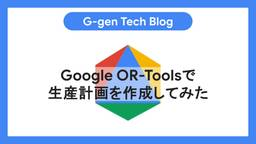

G-gen Tech Blog
https://blog.g-gen.co.jp/
Google Cloudの情報発信を行う技術ブログ
フィード

Google Cloudのハイブリッドサブネット機能を解説
G-gen Tech Blog
G-gen の本間です。Google Cloud のネットワーク機能であるハイブリッドサブネットについて解説します。ハイブリッドサブネット機能を使うと、オンプレミスネットワークと VPC ネットワーク間で、同じ IP アドレス範囲を共有できます。 概要 ハイブリッドサブネットとは 料金 仕様 ルーティング ルートのアドバタイズ プロキシ ARP の使用 ハイブリッドサブネットを使用した VM 移行 制約事項と注意点 概要 IP アドレスの管理 使用できない環境・サービス オンプレミスネットワーク ルーティング 使用できない通信 概要 ハイブリッドサブネットとは ハイブリッドサブネットとは、Go…
2日前

Cloud Run jobsの遅延ジョブを解説
G-gen Tech Blog
G-gen の佐々木です。当記事では、実行開始を最大12時間遅らせる代わりに安価に Cloud Run jobs を実行できる機能、遅延ジョブ（delayed job）について解説します。 概要 Cloud Run jobs とは 遅延ジョブとは ユースケース 遅延ジョブの基本 仕組み トリガーの選び方 タスクのタイムアウト上限 料金比較 単価の比較 月額の試算 注意点 設定手順 遅延ジョブの作成 通常ジョブを遅延実行する 動作確認 待機中の実行の状態 タスクのタイムアウト上限の確認 Cloud Scheduler による平日と週末の使い分けの例 構成 設計上の注意 必要なロール Schedu…
3日前

Migrate to Virtual Machinesを使ってAWSからGoogle CloudにVMを移行する方法
G-gen Tech Blog
G-gen の本間です。当記事では、Migrate to Virtual Machines を使って、Amazon Web Services（AWS）から Google Cloud へ仮想マシンを移行する方法を解説します。 はじめに Migrate to Virtual Machines とは サポートされる環境 移行手順の概要 前提事項 AWS 側の設定 Google Cloud 側の設定 注意点 AWS 側の設定 Google Cloud 側の設定 インスタンスのレプリケーション ターゲットインスタンスの定義 テストクローンの作成と動作確認 カットオーバー レプリケーションの最終処理 はじ…
4日前

Google SecOpsのAIエージェントで脅威を検出できるか評価する
G-gen Tech Blog
G-gen の三浦です。当記事では、Google SecOps の AI エージェントである Detection Engineering エージェントを使い、ある脅威を既存のルールで検出できるかを Antigravity CLI から評価した結果を紹介します。 概要 Google SecOps とは Detection Engineering エージェントとは 注意点 検証の手順 事前準備 必要な IAM ロール 対象ログのパーサー Application Default Credentials の構成 Antigravity CLI への SecOps MCP サーバーの登録 コンテキストの…
5日前

Google OR-Toolsで生産計画を作成してみた
G-gen Tech Blog
G-gen の河野です。当記事では、Google が開発した最適化問題を解くためのオープンソースライブラリ「OR-Tools」を使用して、製品の生産計画を作成します。 OR-Tools とは 仕様 解きたい最適化問題の定義 ソルバーの決定 最適化問題を解く API 版との比較 検証 検証内容 データ処理フロー データ準備 OR-Tools のインストール Python コード 検証結果 出力結果 処理プロセス OR-Tools とは OR-Tools は、Google が開発した、最適化問題を解くためのオープンソースライブラリです。 最適化問題とは、「限られたルールの中で、最適な答えを見つける…
6日前

Google Workspace版Geminiアプリの一時チャットとチャット履歴削除機能を紹介
G-gen Tech Blog
G-gen の西原です。Google Workspace 版の Gemini アプリの一時チャットと会話履歴の削除機能について、概要やデータ保存の仕様、管理コンソールでの制御手順を解説します。 概要 一時チャットとは チャット履歴の個別削除とは チャット履歴保存の仕様 通常チャット 一時チャット データの取り扱いとプライバシー 想定されるユースケース 一時チャットのユースケース 通常チャットのユースケース 管理者設定 Google 管理コンソールでの設定手順 Google Vault による保持 概要 一時チャットとは 一時チャット（Temporary Chats）とは、履歴に残らない特別なチ…
9日前
Cloud RunのAgent Platform機能を解説
G-gen Tech Blog
G-gen の佐々木です。当記事では、Cloud Run にデプロイした AI エージェントや MCP サーバーにエージェント ID を割り当て、Agent Registry に自動登録する「Cloud Run の Agent Platform 機能」について解説します。 前提知識 Cloud Run とは Gemini Enterprise Agent Platform とは Agent Platform の概要 Agent Identity Agent Registry Cloud Run の Agent Platform 機能とは Agent Platform 機能の基本 機能タイプとア…
10日前
Google Workspace StudioでGemini Notebookへのソース追加を自動化してみた
G-gen Tech Blog
G-gen の勝島です。Google Workspace Studio を使用して、Google ドライブに追加されたファイルを Gemini Notebook（旧称 NotebookLM）にソースとして自動で追加するフローの作成手順を紹介します。 はじめに 当記事の概要 Google Workspace Studio とは Gemini Notebook とは 作成するフロー 処理の全体像 追加できるソースの種類 注意事項 フロー作成手順 ノートブックの作成 開始条件の指定 ソース追加ステップの設定 動作確認 はじめに 当記事の概要 当記事では、Google Workspace の業務自動化…
11日前
2026年8月のイチオシGoogle Cloud・Google Workspaceアップデート
G-gen Tech Blog
G-gen の杉村です。2026年8月に発表された、Google Cloud や Google Workspace のイチオシアップデートをまとめてご紹介します。記載は全て、記事公開当時のものですのでご留意ください。 はじめに Google Cloud のアップデート BigQuery で cross-cloud connections が Preview 公開 SCC で Malicious Skill runtime threat detectors が利用可能に BigQuery テーブルを AlloyDB へ同期する機能が Preview 公開 Gemini 3.7 Flash がリリ…
12日前
Cloud FTPを徹底解説！
G-gen Tech Blog
G-gen の杉村です。Google Cloud のフルマネージドな SFTP サーバーサービスである Cloud FTP について、特徴やアーキテクチャ、接続方法、セキュリティ設定などを解説します。 Cloud FTP とは 概要 制限 ユースケース メリット 料金 アーキテクチャ 外部サーバーと内部サーバー ユーザー管理と認証・認可 ディレクトリマッピング サポートされる SFTP 操作 サポートされるコマンド一覧 注意点 監査ログ 概要 管理アクティビティログ データアクセス監査ログ VPC Service Controls との統合 概要 注意点 運用上の考慮事項 構築手順 必要な I…
13日前
Cloud Run instancesにAIエージェントをデプロイする
G-gen Tech Blog
G-gen の佐々木です。当記事では、Cloud Run の新しいリソースタイプである Cloud Run instances に、Agent Development Kit（以下、ADK と記載）で開発した AI エージェントをデプロイして使ってみます。 構成 当記事で使用するもの Cloud Run instances Agent Development Kit（ADK） エージェントの開発 uv プロジェクトの作成 ディレクトリ構成 __init__.py agent.py Dockerfile Google Cloud 側の準備 gcloud CLI の更新 API の有効化 サービス…
16日前
Cloud Run instancesを徹底解説！
G-gen Tech Blog
G-gen の佐々木です。当記事では、Google Cloud のサーバーレスコンテナサービスである Cloud Run の新しいリソースタイプ、Cloud Run instances について解説します。 概要 Cloud Run とは Cloud Run instances とは ユースケース Cloud Run instances の基本 特徴 ライフサイクルと再起動ポリシー 主な設定項目 CPU のバーストとスロットリング 注意点 料金 他のリソースタイプ・サービスとの比較 Cloud Run のリソースタイプ間の比較 Cloud Run services との違い Compute E…
17日前
Model ArmorからSensitive Data Protectionを呼び出して個人情報を匿名化する
G-gen Tech Blog
G-gen の佐々木です。当記事では、Model Armor の機密データ保護フィルタから Sensitive Data Protection のテンプレートを呼び出し、LLM へのプロンプトに含まれる個人情報を匿名化する方法を解説します。 概要 Model Armor とは Sensitive Data Protection とは 機密データ保護フィルタの構成 Basic 構成と Advanced 構成 検査テンプレートと匿名化テンプレート テンプレートの参照関係 制限事項 検出精度に関する注意事項 料金 匿名化したデータの再識別について Sensitive Data Protection …
18日前
Google Workspaceのテストドメインエイリアスを解説
G-gen Tech Blog
G-gen の中川です。Google Workspace の移行期やシステム運用の現場で役立つテストドメインエイリアス（test-google-a.com）について、その仕組みと具体的な使用方法を解説します。 概要 テストドメインエイリアスとは 仕様 ユースケース1 : 段階的なシステム移行のための二重配信 ユースケース2 : 内部解決への対策 内部解決が発生する仕組み 内部解決を解消する方法 メール転送のための受信ゲートウェイ設定 概要 テストドメインエイリアスとは テストドメインエイリアスとは、Google Workspace のプライマリドメインを登録した際に、システムによって自動的に追…
20日前
Gemini Enterprise付帯のAntigravityおよびGemini Code Assistライセンスの解説
G-gen Tech Blog
G-gen の杉村です。Gemini Enterprise のライセンスを購入すると、同数の Gemini Code Assist のライセンスが付帯するほか、Gemini Enterprise のライセンスがアサインされたユーザーは、一定量の範囲内で Antigravity を使用できるようになります。当記事ではこれらのライセンス体系と、使用するための手順について解説します。 概要 Gemini Enterprise ライセンスと付帯物 Gemini Code Assist とは Google Antigravity とは 企業向けの Antigravity 付帯ライセンスの体系 Gemin…
24日前
Cloud SQL for PostgreSQLをインプレースで安全にメジャーバージョンアップする手順
G-gen Tech Blog
G-gen の今村です。Cloud SQL for PostgreSQL を、インプレースアップグレードという方法でメジャーバージョンアップする手順を解説します。当記事では、バージョン17からバージョン18へのアップグレードを例とします。 概要 インプレースアップグレードについて 手順の概要 事前準備 クローンインスタンスの作成 十分なディスク容量の確認 事前チェック 概要 チェックの実行 結果の確認 エラー詳細の確認 よくある事前チェックエラーと対策 拡張機能の互換性 テンプレートデータベースの文字セット インプレースアップグレードの実行 コンソールからの実行 gcloud コマンドからの実…
25日前
SQLダンプファイルをCloud SQL for PostgreSQLにインポートする方法
G-gen Tech Blog
G-gen の今村です。当記事では、SQL ダンプファイルを使用して Cloud SQL for PostgreSQL にデータをインポートする手順を解説します。 はじめに 概要 前提条件 事前準備 ダンプファイルの種類と特徴 ダンプファイルの確認 IAM 権限付与 SQL ダンプファイルを Cloud Storage へアップロード データベースの作成 事前の作成が必要なケース 事前の作成が不要なケース インポートの実行手順 Cloud SQL コンソールでのインポート操作 インポートパラメータの設定 パラメータの設定手順 送信先データベースの選択基準 インポート処理のステータス確認 注意点…
1ヶ月前
Google SecOpsのPlaybooksでアラート対応を自動化する(BigQuery編)
G-gen Tech Blog
G-gen の武井です。当記事では、Google SecOps で検知したアラートの是正対応を Playbooks で自動化する方法を解説します。 はじめに Google SecOps とは Playbooks（ハンドブック）とは 検証の流れ Cloud Audit Logs の取り込み 検知ルールの確認 インテグレーションの設定 必要なインテグレーション BigQuery Slack ケース Playbooks の設定 Playbooks の構成 トリガー コンディション アクションの設定 動作確認 はじめに Google SecOps とは Google Security Operatio…
1ヶ月前
Geminiを使ったGoogleドライブのファイル整理機能Organize my filesを解説
G-gen Tech Blog
G-gen の今村です。当記事では、Google ドライブにおける Gemini を使用したファイル整理機能である Organize my files について解説します。 機能の概要 使用条件 言語設定の制限 管理者およびユーザー向けの設定要件 対象範囲の制限 使用可能なエディションとプラン 使用回数に関する制限 ファイル整理の手順 自動提案の確認と承認 プロンプトやメニューによる調整 機能の概要 Organize my files とは、Google ドライブ内のファイルを Gemini が分析し、適切なフォルダへの分類や整理を提案する機能です。 当機能を使用することで、手動でのフォルダ分…
1ヶ月前
VPC Flow Logsが重複出力されるケースとその原因
G-gen Tech Blog
G-gen の kiharu です。当記事では、Google Cloud において VPC Flow Logs が重複して複数行、出力される事象とその原因について解説します。 事象 原因（ケース1） サブネットの VPC Flow Logs の取得方法は2種類 従来方式（サブネット単位で有効化） 新方式（Network Management API） 今回発生した事象 なぜ二重出力が発生するのか 原因（ケース2） 概要 重複出力が発生する仕組み 対処法 重複取得を確認 推奨される対応 事象 Google Cloud において、VPC Flow Logs を有効にしている VPC ネットワークの…
1ヶ月前
Cloud RunにデプロイしたA2AエージェントをAgent Registryに登録する
G-gen Tech Blog
G-gen の佐々木です。当記事では、Agent Development Kit（ADK）で開発したエージェントを Agent2Agent（A2A）プロトコルに対応させて Cloud Run にデプロイし、Agent Registry に登録する手順を解説します。 構成 当記事で使用するもの ADK とは A2A プロトコルとは Agent Registry とは Cloud Run とは エージェントの開発 ディレクトリ構成 uv プロジェクトの作成 agent.py Dockerfile .dockerignore ローカルでの動作確認 Google Cloud 側の準備 API の有効化…
1ヶ月前
S3バケットをBigQueryからクエリするための2つの機能（BigQuery cross-cloud connectionsとBigQuery Omniの違い）
G-gen Tech Blog
G-gen の杉村です。当記事では、BigQuery cross-cloud connections と BigQuery Omni の違いについて解説します。いずれも Google Cloud のデータ分析用データベースである BigQuery と、Amazon S3 や Azure Blob Storage を接続するための仕組みです。 概要 BigQuery cross-cloud connections と BigQuery Omni 相違点のサマリ どちらを使うべきか 対応リージョン BigQuery cross-cloud connections BigQuery Omni 使用可…
1ヶ月前
Gemini Enterpriseでライセンス数を削減する方法
G-gen Tech Blog
G-gen の菊池です。Gemini Enterprise のサブスクリプションでライセンス数を削減しようとした際に直面するエラーと、その解決策について解説します。 事象 原因 ライセンス削減の仕様制限 サブスクリプションを新規作成する際の壁 対処の手順 概要 手順1: 自動更新の停止 手順2: 契約の期限切れを待つ 手順3: 新しいサブスクリプションの購入 手順4: ライセンスの自動更新 事象 Google Cloud の請求先アカウントに紐づく、Gemini Enterprise のサブスクリプション（月間プラン、または年間プラン）を利用している環境を想定します。 利用者の減少などにより、…
1ヶ月前
Partner Cross-Cloud Interconnect for AWSを解説
G-gen Tech Blog
G-gen の松尾です。当記事では、Google Cloud と Amazon Web Services（AWS）をプライベートに接続する Partner Cross-Cloud Interconnect for AWS について解説します。 概要 Partner Cross-Cloud Interconnect for AWS とは 対応リージョン transport リソース Cross-Cloud Interconnect との比較 料金 接続方式 接続方式の違い VPC ネットワークピアリング Network Connectivity Center 2 つの方式の比較 接続の表示・更新…
1ヶ月前
Spend cap budgetsで意図しない課金を防ぐ
G-gen Tech Blog
G-gen の武井です。当記事では Cloud Billing の新機能である Spend cap budgets を用いて、意図しない課金を防ぐ方法を解説します。 はじめに Spend cap budgets とは パートナーの請求先アカウントでの使用について 対象サービス 制約 必要な権限 設定方法 予算の作成 1. 定義 2. 範囲 3. 金額 4. 操作 動作確認 確認内容 Cloud Run 50% 到達時 80 % 到達時 100 % 到達時 一時停止解除 Gemini Enterprise Agent Platform はじめに Spend cap budgets とは Spen…
1ヶ月前
IAM拒否ポリシーを使用してAgent Runtimeのエージェントへのアクセスを制限する
G-gen Tech Blog
G-gen の佐々木です。当記事では、Agent Runtime にデプロイしたエージェントの呼び出し元を IAM 拒否ポリシーで特定のプリンシパルのみに制限する方法を、Gemini Enterprise アプリからの接続を例に紹介します。 前提知識 Agent Runtime とは Gemini Enterprise とは IAM ポリシーの仕組み 当記事のシナリオ アクセス制限の考え方 エージェントの呼び出しに必要な権限 Gemini Enterprise の呼び出し元 ID 制限に使用する2つの IAM 機能 リソースレベルの IAM ポリシーによる許可の最小化 IAM 拒否ポリシーによ…
1ヶ月前
非エンジニアが安心してバイブ コーディングして公開するには？セキュアなAI駆動開発ハーネスの仕組み(Google Cloud Next Tokyo 26セッションレポート)
G-gen Tech Blog
G-gen の高宮です。当記事は、Google Cloud Next Tokyo 26 の2日目に行われたカスタマーセッション「非エンジニアが安心してバイブ コーディングして公開するには？セキュアな AI 駆動開発ハーネスの仕組み」のレポートです。 他の Google Cloud Next Tokyo 26 の関連記事は Google Cloud Next Tokyo 26 カテゴリの記事一覧からご覧いただけます。 セッションの概要 生の AI 駆動開発の問題点 AI 駆動開発ハーネス「Exoloop」 Exoloop とは Exoloop が提供する主な Skill 群 バイブ コーディング…
1ヶ月前
CDPだけで顧客理解は不十分？Google Cloudと生活者データで実現する”Why 分析”最前線(Google Cloud Next Tokyo 26セッションレポート)
G-gen Tech Blog
G-gen の奥田です。当記事は、Google Cloud Next 26 Tokyo の1日目に行われたカスタマーセッション「CDP だけで顧客理解は不十分？Google Cloud と生活者データで実現する「Why 分析」最前線」のレポートです。 他の Google Cloud Next Tokyo 26 の関連記事は Google Cloud Next Tokyo 26 カテゴリの記事一覧からご覧いただけます。 セッションの概要 データはあるのに顧客が見えない データの量ではなく種類が足りない 再発する 5 つの症状 Why を補ってきた「勘と経験」の正体 5W1H を同時に読む力 勘と…
1ヶ月前
Gemini Enterprise Agent Platform入門！進化した次世代エージェント構築基盤の全貌(Google Cloud Next Tokyo 26セッションレポート)
G-gen Tech Blog
G-gen の今村です。当記事は、Google Cloud Next Tokyo 26 の2日目に行われた Google セッション「Gemini Enterprise Agent Platform 入門！進化した次世代エージェント構築基盤の全貌」のレポートです。 他の Google Cloud Next Tokyo 26 の関連記事は Google Cloud Next Tokyo 26 カテゴリの記事一覧からご覧いただけます。 セッションの概要 Gemini Enterprise Agent Platform とは サービス提供の背景 機能の全体像 Build（構築） 概要 Model G…
1ヶ月前
2026年7月のイチオシGoogle Cloud・Google Workspaceアップデート
G-gen Tech Blog
G-gen の杉村です。2026年7月に発表された、Google Cloud や Google Workspace のイチオシアップデートをまとめてご紹介します。記載は全て、記事公開当時のものですのでご留意ください。 はじめに Google Cloud Next Tokyo 26 の開催 Google Cloud のアップデート Bigtable で Google フロントエンドをバイパスする Direct connectivity が登場 Gemini Enterprise app で東京リージョン（asia-northeast1）がサポート Cloud Run でサブプロセスとしてのサンド…
1ヶ月前